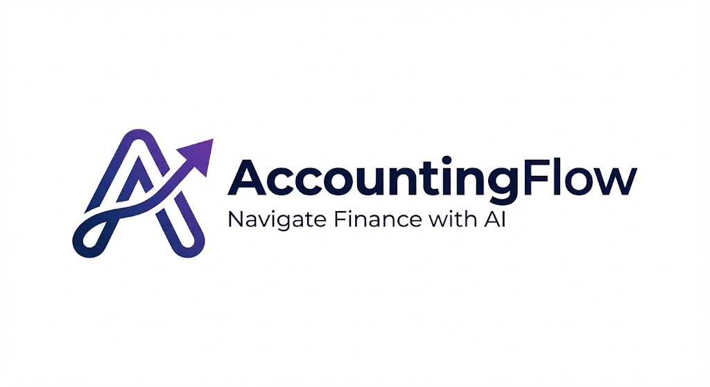

Our AI Solutions
MOST POPULAR
AccountingFlow
지능형 AI CFO & 경영 리포트
Gemini 3.0 Pro가 장부를 정리하고 전략적 인사이트를 제안합니다.
분산형 인프라로 비용은 낮추고, 보안 마스킹으로 안전함은 더했습니다.
상세 보기 →

87%
기존 대비 고정비 절감
Zero
데이터 유출 리스크
10s
전수 분석 소요 시간
AuditFlow
전문 감사인을 위한 AI 시스템
방대한 데이터를 실시간 전수 분석하여 리스크를 사전에 방지합니다.
금융권 수준의 보안 코어가 당신의 데이터를 보호합니다.
상세 보기 →